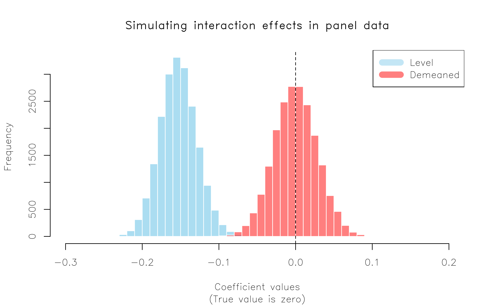

Being able to code up efficient simulations is one of the most useful skills that you can develop as a social (data) scientist. Unfortunately, it’s also something that’s rarely taught in universities or textbooks.1 This post will cover some general principles that I’ve adopted for writing fast simulation code in R.
I should clarify that the type of simulations that I, personally, am most interested in are related to econometrics. For example, Monte Carlo experiments to better understand when a particular estimator or regression specification does well (or poorly). The guidelines here should be considered accordingly and might not map well on to other domains (e.g. agent-based models or numerical computation). {: .notice–info}
Our example: Interaction effects in panel models
I’m going to illustrate by replicating a simulation result in a paper that I really like: “Interaction effects in econometrics” by Balli & Sørensen (2013) (hereafter, BS13).
BS13 does various things, but one result in particular has had a big impact on my own research. They show that empirical researchers working with panel data are well advised to demean any (continuous) variables that are going to be interacted in a regression. That is, rather than estimating the model in “level” terms…
Here, \(\overline{X1}_{i.}\) refers to mean value of variable \(X1\) (e.g. GDP over time) for unit \(i\) (e.g. country).
We’ll get to the simulations in a second, but BS13 describe the reasons for their recommendation in very intuitive terms. The super short version — again, you really should read the paper — is that the level model can pick up spurious trends in the case of varying slopes. The implications of this insight are fairly profound… if for no other reason that so many applied econometrics papers employ interaction terms in a panel setting.3
Okay, so a potentially big deal. But let’s see a simulation and thereby get the ball rolling for this post. I’m going to run a simulation experiment that exactly mimics one in BS13 (see Table 3). We’ll create a fake dataset where the true interaction is ZERO. However, the slope coefficient of one of the parent terms varies by unit (here: country). If BS13 is right, then including an interaction term in our model could accidentally result in a spurious, non-zero coefficient on this interaction term. The exact model is
It will prove convenient for me to create a function that generates an instance of the experimental dataset — i.e. corresponding to one simulation run — which is what you see in the code below. The exact details are not especially important. (I’m going to coerce the return object into a data.table instead of standard data frame, but I’ll get back to that later.) For now, just remember that the coefficient on any interaction term should be zero by design. I’ll preview the resulting dataset at the end of the code.
library(data.table)## Convenience function for generating our experimental panel data. Takes a ## single argument: `sims` (i.e. how many simulation runs to do we want; defaults ## to 1).gen_data =function(sims=1) {## Total time periods in the the panel = 500 tt =500 sim =rep(rep(1:sims, each =10), times =2) ## Repeat twice b/c we have two countries## x1 covariates x1_A =1+rnorm(tt*sims, 0, 1) x1_B =1/4+rnorm(tt*sims, 0, 1)## Add second, nested x2 covariates for each country x2_A =1+ x1_A +rnorm(tt*sims, 0, 1) x2_B =1+ x1_B +rnorm(tt*sims, 0, 1)## Outcomes (notice different slope coefs for x2_A and x2_B) y_A = x1_A +1*x2_A +rnorm(tt*sims, 0, 1) y_B = x1_B +2*x2_B +rnorm(tt*sims, 0, 1)## Combine in a data table (basically just an enhanced data frame) dat =data.table( sim,id =as.factor(c(rep('A', length(x1_A)), rep('B', length(x1_B)))),x1 =c(x1_A, x1_B),x2 =c(x2_A, x2_B),y =c(y_A, y_B) )## Demeaned covariates (grouped by country and simulation) dat[, `:=` (x1_dmean = x1 -mean(x1),x2_dmean = x2 -mean(x2)), by = .(sim, id)][]## Optional set order i.t.o simssetorder(dat, sim)return(dat)}## Generate an instance of the data (using the default arguments)set.seed(123)d =gen_data()d
sim id x1 x2 y x1_dmean x2_dmean
<int> <fctr> <num> <num> <num> <num> <num>
1: 1 A 0.4395243534 0.4437256 0.3716463 -0.59506609 -1.61706557
2: 1 A 0.7698225105 0.7298675 1.7366279 -0.26476794 -1.33092373
3: 1 A 2.5587083141 3.5407281 5.5578472 1.52411787 1.47993688
4: 1 A 1.0705083914 1.9383333 4.2280693 0.03591794 -0.12245794
5: 1 A 1.1292877352 -0.4200550 0.8833686 0.09469729 -2.48084624
---
996: 1 B 0.1600248030 1.2366685 3.6943280 -0.08764048 -0.06972657
997: 1 B 1.3205160368 2.5756808 6.0263720 1.07285075 1.26928576
998: 1 B -1.1011003857 0.1763464 -1.1775877 -1.34876567 -1.13004861
999: 1 B -0.2726166972 1.2642393 3.4448738 -0.52028198 -0.04215572
1000: 1 B 0.0008093222 0.5403238 1.9157509 -0.24685596 -0.76607128
Let’s run some regressions on one simulated draw of our dataset. Since this is a panel model, I’ll use the (incredible) fixest package to control for country (“id”) fixed-effects.
mod_level mod_dmean
Dependent Var.: y y
x1 1.195*** (0.0650)
x2 1.638*** (0.0394)
x1 x x2 -0.1373*** (0.0187)
x1_dmean 0.9544*** (0.0577)
x2_dmean 1.556*** (0.0388)
x1_dmean x x2_dmean 0.0199 (0.0213)
Fixed-Effects: ------------------- ------------------
id Yes Yes
___________________ ___________________ __________________
S.E. type IID IID
Observations 1,000 1,000
R2 0.86768 0.86062
Within R2 0.86761 0.86055
---
Signif. codes: 0 '***' 0.001 '**' 0.01 '*' 0.05 '.' 0.1 ' ' 1
Well, there you have it. The “level” model spuriously yields a statistically significant coefficient on the interaction term. In comparison, the “demeaned” version avoids this trap and also appears to have better estimated the parent term coefficients.
Cool. But to really be sure, we should repeat our simulation many times. (BS13 do it 20,000 times…) And, so, we now move on to the main purpose of this post: How do we write simulation code that efficiently completes tens of thousands of runs? Here follow some key principles that I try to keep in mind.
Principle 1: Trim the fat
Subtitle: lm.fit() is your friend
The first key principle for writing efficient simulation code is to trim the fat as much as possible. Even small differences start to add up once you’re repeating operations tens of thousands of times. For example, does it really make sense to use fixest::feols() for this example data? As much as I am a huge fixest stan, in this case I have to say… no. The package is optimised for high-dimensional fixed-effects, clustered errors, etc. Our toy dataset contains just one fixed-effect (comprising two levels) and we are ultimately only interested in extracting a single coefficient for our simulation. We don’t even need to save the standard errors. Most of fixest’s extra features are essentially wasted. We could probably do better just by using a simple lm() call and specifying the country fixed-effect (“id”) as a factor.
However, lm() objects still contain quite a lot of information (and invoke extra steps) that we don’t need. We can simplify things even further by directly using the fitting function that lm calls underneath the hood. Specifically, the lm.fit() function. This requires a slightly different way of writing our regression model — closer to matrix form — but yields considerable speed gains. Here’s a benchmark to demonstrate.
Unit: microseconds
expr min lq mean median uq max neval cld
feols 4779.250 4779.250 4944.217 4944.217 5109.184 5109.184 2 a
lm 896.933 896.933 1628.575 1628.575 2360.217 2360.217 2 b
lm.fit 93.579 93.579 115.151 115.151 136.723 136.723 2 b
For this small dataset example, a regular lm() call is about five times faster than feols()… and lm.fit() is a further ten times faster still. Now, we’re talking microseconds here and the difference is not something you’d notice running a single regression. But… once you start running 20,000 of them, then those microseconds start to add up.4 Final thing, just to prove that we’re getting the same coefficients:
The output is less visually appealing a regular regression summary, but we can see the interaction term coefficient of 0.01993247 in the order in which it appeared (i.e. “x4”). FWIW, you can also name the coefficients in the design matrix if you wanted to make it easier to reference a coefficient by name. This is what I’ll be doing in the full simulation right at the end.
intercept x1 x2 x1:x2 id
3.16116857 0.95435281 1.55596182 0.01993248 -0.14977947
Tip
There is an even faster .lm.fit function (note the leading .). The same ideas carry over as with “regular” lm.fit(). See follow up post here.
Principle 2: Generate your data once
Subtitle: It’s much quicker to generate one large dataset than many small ones
One common bottleneck I see in a lot of simulation code is generating a small dataset for each new run of a simulation. This is much less efficient that generating a single large dataset that you can either sample from during each iteration, or subset by a dedicated simulation ID. We’ll get to iteration next, but this second principle really stems from the same core idea: vectorisation in R is much faster than iteration. Here’s a simple benchmark to illustrate, where we generate data for a 100 simulation runs. Note that the relative difference would keep growing as we added more simulations.
Unit: milliseconds
expr min lq mean median uq max
many_small 1473.3100 1473.3100 1751.12735 1751.12735 2028.94469 2028.94469
one_big 23.1516 23.1516 23.16008 23.16008 23.16856 23.16856
neval cld
2 a
2 b
Principle 3: Go parallel or nest
Subtitle: Let data.table and co. handle the heavy lifting
The standard approach to coding up a simulation is to run everything as an iteration, either using a for() loop or an lapply() call. Experienced R programmers are probably reading this section right now and thinking, “Even better; run everything in parallel.” And it’s true. A Monte Carlo experiment like the one we’re doing here is ideally suited to parallel implementation, because each individual simulation run is independent. It’s a key reason why Monte Carlo experiments are such popular tools for teaching parallel programming concepts. (Guilty as charged.)
But any type of explicit iteration — whether it is a for() loop or an lapply() call, or whether it is run sequentially or in parallel — runs up against the same problem as we saw in Principle 2. Specifically, it is slower than vectorisation. So how can we run our simulations in vectorised fashion? Well, it turns out there is a pretty simple way that directly leverages Principle 2’s idea of generating one large dataset: We nest our simulations directly in our large data.table or tibble.
Hadley and Garret’s R for Data Science book has a nice chapter on model nesting with tibbles, and then Vincent has a cool blog post replicating the same workflow with data.table. But, really, the core idea is pretty simple: We can use the advanced data structure and functionality of tibbles or data.tables to run our simulations as grouped operations (i.e. by simulation ID). In other words, just like we can group a data frame and then collapse down to (say) mean values, we can also group a data frame and then run a regression on each subgroup.
Why might this be faster than explicit parallel iteration? Well, basically it boils down to the fact that data.tables and tibbles provide an enhanced structure for returning complex objects (including list columns) and their grouped operations are highly optimised to run in (implicit) parallel at the C++ level.5 The internal code of data.table, in particular, is just so insanely optimised that trying to beat it with some explicit parallel loop can be a fool’s errand.
Okay, so let’s see a benchmark. I’m going to compare three options for simulating 100 draws: 1) sequential iteration with lapply(), 2) explicit parallel iteration with parallel::mclapply, and 3) nested (implicit parallel) iteration. For the latter, I’m simply grouping my dataset by simulation ID and then leveraging data.table’s powerful .SD syntax.6 Note further than I’m going to run regular lm() calls rather than lm.fit() — see Principle 1 — because I want to keep things simple and familiar for the moment.
Unit: milliseconds
expr min lq mean median uq max neval cld
sequential 142.18928 142.18928 161.5120 161.5120 180.8346 180.8346 2 a
parallel 126.91207 126.91207 128.9292 128.9292 130.9463 130.9463 2 a
nested 99.18945 99.18945 101.9551 101.9551 104.7208 104.7208 2 a
Okay, not a huge difference between the three options for this small benchmark. But — trust me — the difference will grow for the full simulation where we’re comparing the level vs demeaned regressions with lm.fit().UPDATE: Upon reflection, I’m not being quite fair to mclapply() here, because it is being penalised for overhead on a small example. But I definitely stand by my next point. There are also some other reasons why relying on data.table will help us here. For example, parallel::mclapply() relies on forking, which is only available on Linux or Mac. Sure, you could use a different package like future.apply to provide a parallel backend (PSOCK) for Windows, but that’s going to be slower. Really, the bottom line is that we can outsource all of that parallel overhead to data.table and it will automatically handle everything at the C(++) level. Winning.
Principle 4: Use matrices for an extra edge
Subtitle: Save your simulation from having to do extra conversion work
The primary array format of empirical work is the data frame. It’s what we all use, really, so there’s no point expanding on that. (TL;DR data frames are just very convenient for humans to work with and reason about.) However, regressions are run on matrices. Which is to say that when you run a regression in R — and most other languages for that matter — behind the scenes your input data frame is first converted to an equivalent matrix before any computation gets done. Matrices have several features that make them “faster” to compute on than data frames. For example, every element must be of the same type (say, numeric). But let’s just agree that converting a data frame to a matrix requires at least some computational effort. Consider then what happens when we feed our lm.fit() function a pre-created design matrix, instead asking it to convert a bunch of data frame columns on the fly.
Unit: microseconds
expr min lq mean median uq max neval cld
lm.fit 75.345 78.277 108.4792 81.008 84.877 222.889 5 a
lm.fit_mat 57.491 59.186 60.5674 59.268 61.745 65.147 5 a
We’re splitting hairs at this point. I mean, what’s 20 microseconds between friends? And, yet, these 20 microseconds translate to a roughly 40% improvement in relative terms. As I keep saying, even microseconds add up once you multiply them by a couple thousand.
“Okay, Grant.” I can already you you saying. “You just told us to use data.tables and now you’re telling us to switch to matrices. Which is it, man?!” Well, remember what I said earlier about the enhanced structure that data.tables (and tibbles) offer us. We can easily create a list column of matrices inside a data.table (or tibble). We could have done this directly in the gen_data() function. But I’m going to leave that function as-is, and show you how simple it is to collapse columns of an existing data.table into a matrix list column. Once more we’ll use a standard grouped operation — where we are grouping by sim — to do the work:
d = d[, .(Y =list(y),X_level =list(cbind(intercept =1, x1 = x1, x2 = x2, 'x1:x2'= x1_dmean*x2_dmean, id = id)),X_dmean =list(cbind(intercept =1, x1 = x1_dmean, x2 = x2_dmean, 'x1:x2'= x1_dmean*x2_dmean, id = id))), by = sim]d
I know the printed output looks a little different, but the key thing to know is that each simulation is now represented by a single row. In this case, we only have one simulation, so our whole data table consists of just one row. Moreover, those fancy list columns contain all of the 500 panel observations — in matrix form — that we need run our regressions. To access whatever is inside one of the list columns, we “unnest” very simply by extracting the first element with brackets, i.e. [[1]]. For example, to extract the Y column of our single simulation dataset, we could do:
If you’d like to know more about this approach, than I highly recommend Vincent’s aforementioned blog post on the topic. The very last thing I’m going to show you here (since we’ll soon be adapting it to run our full simulation), is how easily everything carries over to operations inside a nested data table. In short, we just use the magic of .SD again:
Time to put everything together and run this thing. Like BS13, I’m going to simulate 20,000 runs. I’ll print the time it takes to complete the full simulation at the bottom.
set.seed(123)## Generate our large dataset of 20k simulationsd =gen_data(2e4)## Optional: Set key for better collapse performancesetkey(d, sim)## Collapse into a nested data.table (1 row per simulation), with matrix list columnsd = d[, .(Y =list(y),X_level =list(cbind(intercept =1, x1 = x1, x2 = x2, 'x1:x2'= x1*x2, id = id)),X_dmean =list(cbind(intercept =1, x1 = x1_dmean, x2 = x2_dmean, 'x1:x2'= x1_dmean*x2_dmean, id = id))), by = sim]## Run our simulationtic =Sys.time()sims = d[, .(level =coef(lm.fit(.SD$X_level[[1]], .SD$Y[[1]]))['x1:x2'],dmean =coef(lm.fit(.SD$X_dmean[[1]], .SD$Y[[1]]))['x1:x2']), by = sim]Sys.time() - tic
Time difference of 2.860526 secs
And look at that. Just over 2 seconds to run the full 20k simulations! (Can you beat that? Let me know in the comments… UPDATE: Turns out you can thanks to the even faster .lm.fit() function. See follow-up post here.)
All that hard work deserves a nice plot, don’t you think?
par(family ='HersheySans') ## Optional: Nice font for (base) plottinghist(sims$level, col = scales::alpha('skyblue', .7), border=FALSE,main ='Simulating interaction effects in panel data',xlim =c(-0.3, 0.2), xlab ='Coefficient values',sub ='(True value is zero)')hist(sims$dmean, add=TRUE, col = scales::alpha('red', .5), border=FALSE)abline(v =0, lty =2)legend("topright", col =c(scales::alpha(c('skyblue', 'red'), .5)), lwd =10,legend =c("Level", "Demeaned"))

Here we have replicated the key result in BS13, Table 3. Moral of the story: If you have an interaction effect in a panel setting (e.g. DiD!), it’s always worth demeaning your terms and double-checking that your results don’t change.
Conclusion
Being able to write efficient simulation code is a very valuable skill. In this post we have replicated an actual published result, incorporating several principles that have served me well:
Trim the fat (Subtitle: lm.fit() is your friend.)
Generate your data once (Subtitle: It’s much quicker to generate one large dataset than many small ones)
Go parallel or nest (Subtitle: Let data.table and co. handle the heavy lifting)
Use matrices for an extra edge (Subtitle: Save your simulation from having to do extra conversion work)
You certainly don’t have to adopt all of these principles to write your own efficient simulation code in R. There may even be cases where it’s more efficient to do something else. But I’m confident that incorporating at least one or two of them will generally make your simulations much faster.
P.S. If you made it this far and still need convincing that simulations are awesome, watch John Rauser’s incredible talk, “Statistics Without The Agonizing Pain”.
References
Balli, Hatice Ozer, and Bent E. Sørensen. “Interaction effects in econometrics.” Empirical Economics 45, no. 1 (2013): 583-603. Link
Footnotes
Ed Rubin and I are writing a book that will attempt to fill this gap, among other things. Stay tuned!↩︎
In their notation, BS13 only demean the interacted terms on \(\beta_3\). But demeaning the parent terms on \(\beta_1\) and \(\beta_2\) is functionally equivalent and, as we shall see later, more convenient when writing the code since we can use R’s * expansion operator to concisely specify all of the terms.↩︎
Got a difference-in-differences model that uses twoway fixed-effects? Ya, that’s just an interaction term in a panel setting. In fact, the demeaning point that BS13 are making here — and actually draw an explicit comparison to later in the paper — is equivalent to the argument that we should control for unit-specific time trends in DiD models. The paper includes additional simulations demonstrating this equivalence, but I don’t want to get sidetracked by that here.↩︎
Another thing is that lm.fit() produces a much more limited, but leaner return object. We’ll be taxing our computer’s memory less as a result.↩︎
That’s basically all that vectorisation is; i.e. a loop implemented at the C(++) level.↩︎
This will closely mimic a related example in the data.table vignettes, which you should read if you’re interested to learn more.↩︎